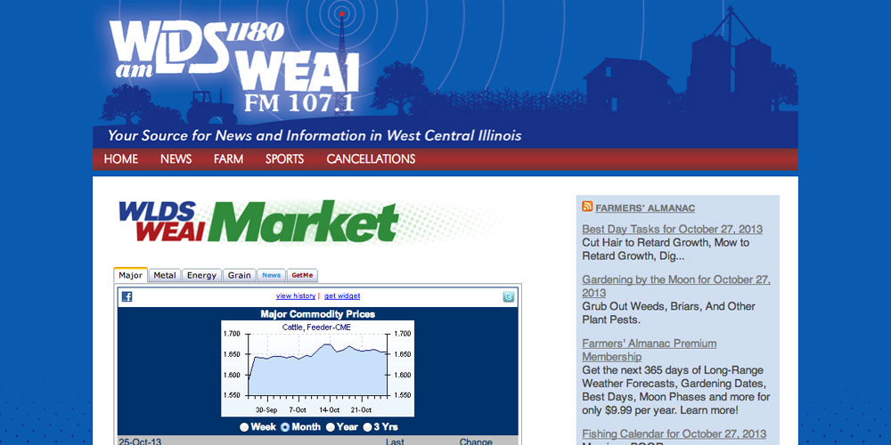
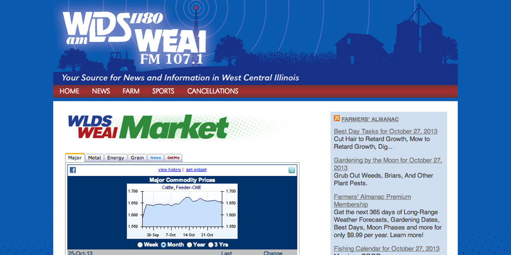

WLDS/WEAI Radio
As part of a three person team, I created a customized installation of Wordpress and developed the theme. My challenge on this project was to create a lightweight, responsive site that would look good on any device. I gained a lot of invaluable experience, working with the various plugins available and getting Wordpress to do exactly what I wanted. The site launched on October 1, 2013.

 
